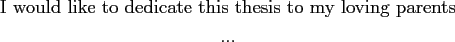
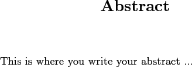

Next: Contents Contents
float=hbp,basicstyle=, stringstyle=colString, commentstyle=colComments, columns=flexible, tabsize=4, frame=single, extendedchars=true, showspaces=false, showstringspaces=false, numbers=left, numberstyle=, breaklines=true, backgroundcolor=hellgelb, breakautoindent=true, captionpos=b

